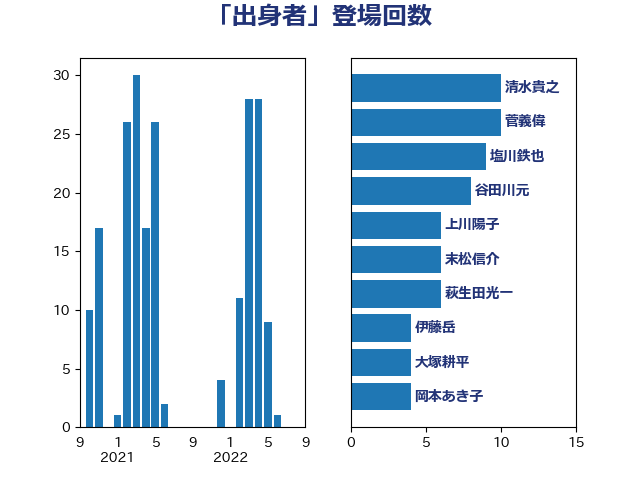

単語「出身者」

| 清水貴之 | 日本維新の会 | 10 回 |
| 菅義偉 | 自由民主党 | 10 回 |
| 塩川鉄也 | 日本共産党 | 9 回 |
| 谷田川元 | 立憲民主党 | 8 回 |
| 上川陽子 | 自由民主党 | 6 回 |
| 末松信介 | 自由民主党 | 6 回 |
| 萩生田光一 | 自由民主党 | 6 回 |
| 伊藤岳 | 日本共産党 | 4 回 |
| 大塚耕平 | 国民民主党 | 4 回 |
| 岡本あき子 | 立憲民主党 | 4 回 |
| 中谷一馬 | 立憲民主党 | 3 回 |
| 吉良州司 | 無所属 | 3 回 |
| 打越さく良 | 立憲民主党 | 3 回 |
| 野田聖子 | 自由民主党 | 3 回 |
| 中司宏 | 日本維新の会 | 2 回 |
| 井上哲士 | 日本共産党 | 2 回 |
| 伊波洋一 | 無所属 | 2 回 |
| 古川禎久 | 自由民主党 | 2 回 |
| 小西洋之 | 立憲民主党 | 2 回 |
| 平井卓也 | 自由民主党 | 2 回 |
| 池畑浩太朗 | 日本維新の会 | 2 回 |
| 沢田良 | 日本維新の会 | 2 回 |
| 階猛 | 立憲民主党 | 2 回 |
| 一谷勇一郎 | 日本維新の会 | 1 回 |
| 伊藤俊輔 | 立憲民主党 | 1 回 |
| 古賀之士 | 立憲民主党 | 1 回 |
| 吉田忠智 | 立憲民主党 | 1 回 |
| 嘉田由紀子 | 無所属 | 1 回 |
| 國重徹 | 公明党 | 1 回 |
| 城内実 | 自由民主党 | 1 回 |
| 大塚拓 | 自由民主党 | 1 回 |
| 寺田静 | 無所属 | 1 回 |
| 小池晃 | 日本共産党 | 1 回 |
| 小沢雅仁 | 立憲民主党 | 1 回 |
| 小沼巧 | 立憲民主党 | 1 回 |
| 山添拓 | 日本共産党 | 1 回 |
| 岬麻紀 | 日本維新の会 | 1 回 |
| 岸真紀子 | 立憲民主党 | 1 回 |
| 川田龍平 | 立憲民主党 | 1 回 |
| 本村伸子 | 日本共産党 | 1 回 |
| 本田顕子 | 自由民主党 | 1 回 |
| 柴田巧 | 日本維新の会 | 1 回 |
| 梅谷守 | 立憲民主党 | 1 回 |
| 櫻井周 | 立憲民主党 | 1 回 |
| 浮島智子 | 公明党 | 1 回 |
| 滝波宏文 | 自由民主党 | 1 回 |
| 田村憲久 | 自由民主党 | 1 回 |
| 美延映夫 | 日本維新の会 | 1 回 |
| 若宮健嗣 | 自由民主党 | 1 回 |
| 茂木敏充 | 自由民主党 | 1 回 |
| 菊田真紀子 | 立憲民主党 | 1 回 |
| 葉梨康弘 | 自由民主党 | 1 回 |
| 西銘恒三郎 | 自由民主党 | 1 回 |
| 野上浩太郎 | 自由民主党 | 1 回 |
| 金子恭之 | 自由民主党 | 1 回 |
| 長友慎治 | 国民民主党 | 1 回 |
| 青山大人 | 立憲民主党 | 1 回 |
| 高木啓 | 自由民主党 | 1 回 |
| 高良鉄美 | 無所属 | 1 回 |
| 麻生太郎 | 自由民主党 | 1 回 |